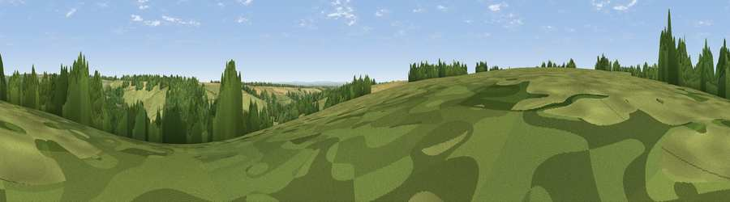

Viewpoint near Woodmancote
#42055 in England · top 84% of its area beats it · near WoodmancoteThe view, rendered

A 360° render of this exact spot computed from the terrain model, tree cover and land cover — summer colours, afternoon light, calibrated against photographs of famous viewpoints. Real trees, hedges and buildings will differ in detail.
The panorama
Grey silhouette: terrain skyline in each direction (720 bearings, Earth curvature and refraction included). Dashed green: skyline with trees (+15 m) and buildings (+8 m) as obstacles. Blue strip: how far the ground is visible on each bearing.
Where the view opens
Wedge length = distance to the farthest visible ground on that bearing (vegetation-aware). Rings at 10, 25 and 50 km.
What fills the view
50% grassland · 39% woodland · 10% cropland · 1% built-up
Angular shares of the visible panorama (visual magnitude), not map area. Landscape diversity 0.43 (0–1 Shannon).
Key numbers
More beautiful places nearby
The staircase of upgrades: each row has a higher view potential than everything closer. Driving times are estimates from straight-line distance, calibrated against real road routing — check an actual route before setting out.
| Place | Direction | Drive | Score |
|---|---|---|---|
| Viewpoint near Rendcomb | E · 1 km | ~3 min | 36.1 |
| Viewpoint near Rendcomb | NNE · 3 km | ~7 min | 51.2 |
| Pen Hill | NNW · 4 km | ~9 min | 66.4 |
| Viewpoint near Charlton Kings | NNW · 10 km | ~19 min | 70.0 |
| Birdlip Hill | WNW · 10 km | ~20 min | 71.7 |
| Viewpoint near Witcombe | NW · 11 km | ~21 min | 72.2 |
| Viewpoint near Leckhampton | NNW · 11 km | ~21 min | 73.7 |
| Viewpoint near Leckhampton | NW · 11 km | ~21 min | 77.8 |
51.78034, -1.98437 · source: screening · position refined by local search. Computed location — check access rights before visiting.